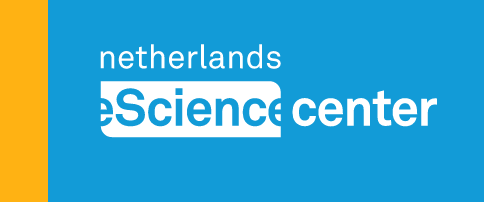

Our Collaborators
eScience Center

Utrecht University
National Library The Hague
Exploring the evolution of sustainability language using machine learning techniques.
This project investigates how the language of sustainability has evolved over time using machine learning to analyze historical texts.
We gather historical data from various sources, including digital archives, libraries, and research institutions.
We use machine learning models, such as BERT, to analyze and track the evolution of sustainability-related language over time.
eScience Center
Utrecht University
National Library The Hague